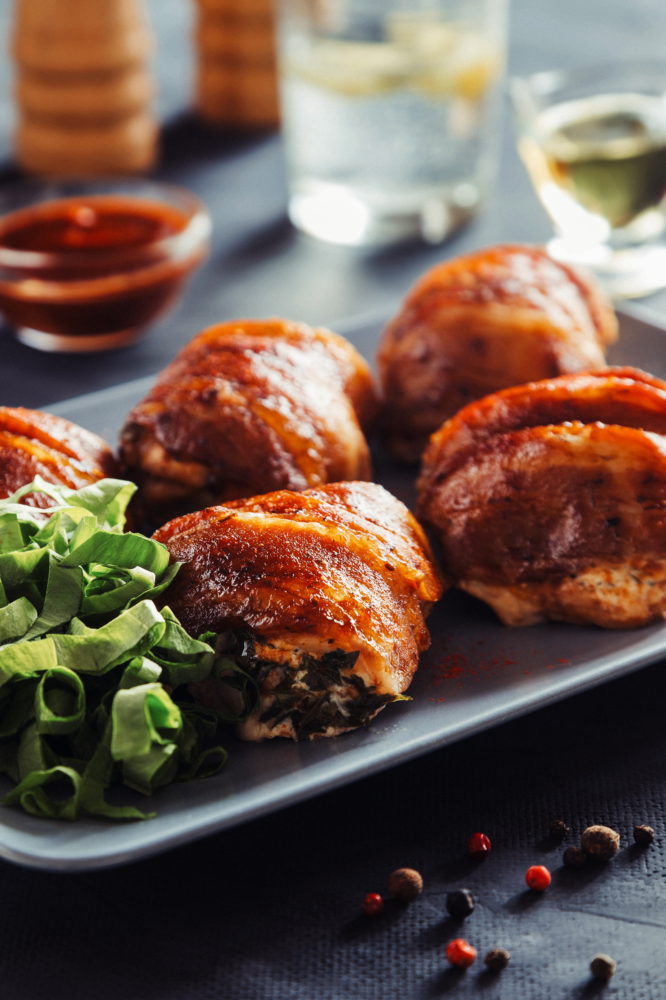

Lasagna

Description
This summer, hit the grill with some of the best chicken
dishes from around the world. These grilled chicken recipes
take their inspiration from home cooks the world over.
We're featuring top-rated recipes for African piri-piri,
Laotian ping gai, grilled pollo a la brasa from Peru, kebabs
and satays from all over, and so much more. They'll keep you
thrilled about grilled chicken all summer long!
Ingredients Needed:
- 1 Cup Fresh Lemon Juice
- 0.25 cup paprika
- 2 tablespoons hot chili powder
- 3 cloves garlic, minced
- 1.5 teaspoons chopped fresh ginger
- 1.5 teaspoons salt
- 4 bone-in chicken breast halves
How to Make Peri-Peri Chicken Step-By-Step
- Stir together lemon juice, paprika, chili powder, garlic, ginger, and salt in a large bowl until well combined
- Add chicken; rub until well coated and marinate in the refrigerator for 3 hours.
- Preheat a grill for medium heat and lightly oil the grates.
- Place chicken onto the preheated grill; discard marinade.
- ook, turning occasionally, until skins are slightly charred and the juices run clear, about 30 minutes.
- An instant-read thermometer inserted into the center of chicken should read at least 75 degrees C.